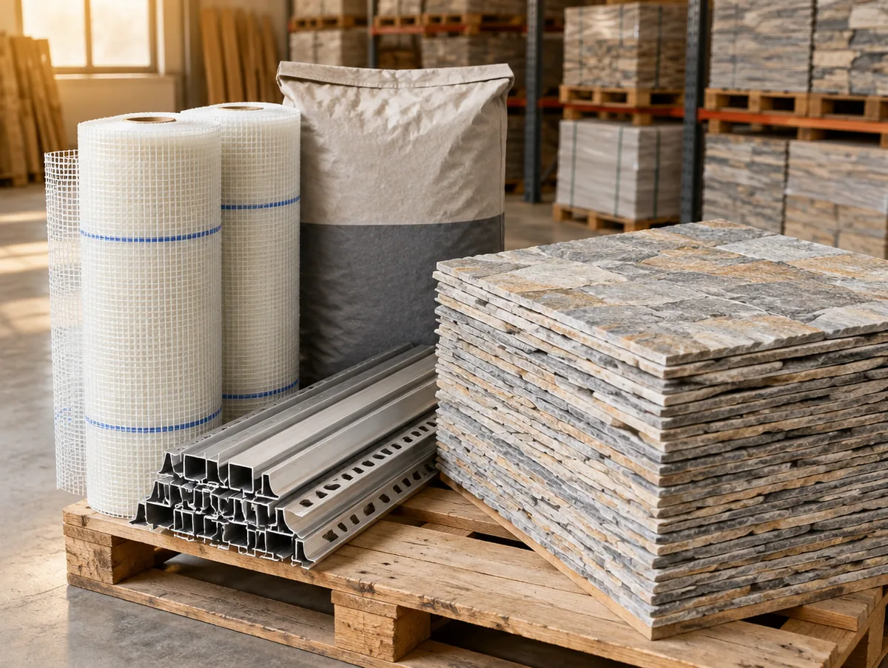

판 한 장 뒤에
네 가지가 더 있습니다.
접착제의 양, 메쉬의 폭, 트림의 길이. 셀프견적은 판 수량과 함께 부자재 소요량도 범위로 알려 드립니다.
취급 품목
롤·포대·개처럼 판매 단위가 다른 품목은 단위를 그대로 표기합니다. 같은 계산 엔진이 단위만 바꿔 다룹니다.
Why it matters
외벽은 메쉬부터
기존 외벽 위에 덧붙이는 시공은 접착층의 균열이 곧 탈락으로 이어집니다. 외벽 사례에는 보강 메쉬와 유연 접착제가 빠짐없이 들어갔고, 셀프견적에서 외벽을 고르면 이 두 품목이 결과에 함께 나옵니다.